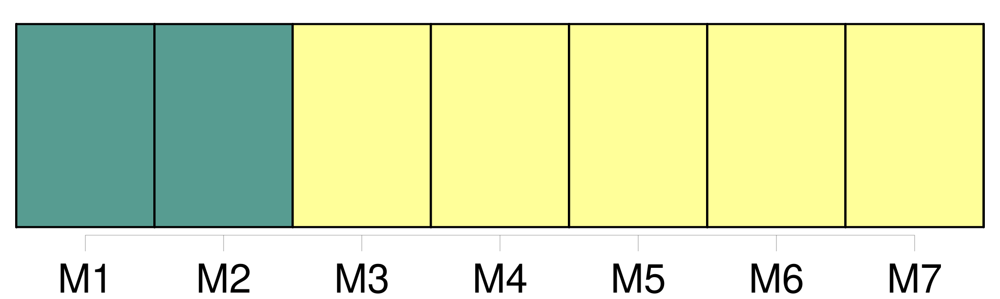
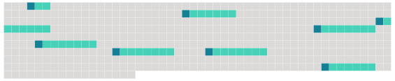

Longueur nb maillons : 8 mentions |
 |
Article XXXI : [Entrée en vigueur] [2 phrases]
Après la date d' [entrée en vigueur de la présente convention] , pour tout État ou toute organisation régionale d'intégration économique qui satisfait aux exigences de l'article XXVII ou de l'article XXX, la présente convention entre en vigueur pour cet État ou cette organisation régionale d'intégration économique le trentième ( 30e ) jour suivant le dépôt de son instrument de ratification, d'acceptation, d'approbation ou d'adhésion. [1 phrases]
Dès [l'entrée en vigueur de la présente convention] , celle -ci prévaut, en ce qui concerne les relations entre les parties à la présente convention et à la convention de 1949, sur la convention de 1949. [1 phrases]
Dès [l'entrée en vigueur de la présente convention] , les mesures de conservation et de gestion et les autres arrangements adoptés par la Commission conformément à la convention de 1949 restent en vigueur jusqu'à leur échéance ou leur abrogation par décision de la Commission ou leur remplacement par d'autres mesures ou arrangements adoptés conformément à la présente convention. [1 phrases]
Dès [l'entrée en vigueur de la présente convention] , toute partie à la convention de 1949 qui n'a pas encore accepté d'être liée par la présente convention est réputée demeurer membre de la Commission, sauf si une telle partie décide de ne pas rester membre de la Commission en notifiant par écrit cette décision au dépositaire avant [l'entrée en vigueur de la présente convention] [1 phrases]
Dès [l'entrée en vigueur de la présente convention] , pour toutes les parties à la convention de 1949, cette dernière est considérée comme ayant pris fin conformément aux règles pertinentes du droit international telles que définies dans l'article 59 de la convention de Vienne sur le droit des traités. [2 phrases]
Cette application provisoire commence à la date d' [entrée en vigueur de la présente convention] ou à la date de réception de ladite notification par le dépositaire, si celle -ci est postérieure. |
 |
Il est possible de télécharger la ressource sur la page Ortolang |
Si vous avez des questions ou vous voyez des erreurs, merci d'envoyer un mail à silvia.federzoni89@gmail.com |